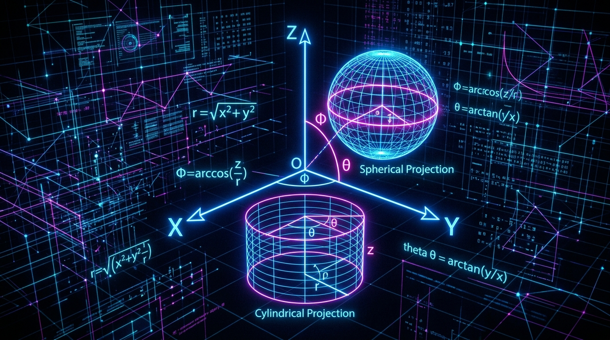

Understanding Coordinate Systems: Cartesian, Polar, Cylindrical, and Spherical

To describe the physical universe, we must be able to specify where things are and how they move. To do this mathematically, we rely on Coordinate Systems. Depending on the symmetry of a problem—whether it’s a block sliding down a ramp, a planet orbiting a star, or an electron trapped in a hydrogen atom—choosing the right coordinate system can turn an impossible differential equation into a trivial one.
1. Foundations: Vector Spaces and Frames of Reference
Before choosing a coordinate system, we must establish a Frame of Reference. In physics, a frame of reference consists of an abstract coordinate system and the set of physical reference points that uniquely fix the coordinate system and standardize measurements.
Mathematically, physical space is treated as a Vector Space. A vector space is defined by a set of basis vectors. In three-dimensional space (\(3\text{D}\)), any position vector \(\mathbf{r}\) can be expressed as a linear combination of three linearly independent basis vectors.
Degrees of Freedom
The number of independent coordinates required to completely specify the position and configuration of a system is its degrees of freedom (\(N_{\text{dof}}\)). * A free particle in \(3\text{D}\) space has \(3\) degrees of freedom. * A rigid body in \(3\text{D}\) space has \(6\) degrees of freedom (3 for translation of the center of mass, 3 for rotation/orientation). * A bead sliding on a fixed wire in \(3\text{D}\) space has only \(1\) degree of freedom, because its motion is constrained to a 1D path.
2. The Role of Symmetry
The entire purpose of choosing a specific coordinate system is to exploit the symmetry of the physical system you are analyzing. If a physical system looks the same when viewed from different angles or positions, it possesses symmetry. Aligning your coordinate system with this symmetry reduces the number of variables in your equations.
- Translational (Planar) Symmetry: The system is uniform along a straight line or across a flat plane. For example, a uniform electric field between two flat metal plates. You can slide along the plate, and the physics doesn’t change. This naturally calls for Cartesian Coordinates.
- Axial (Cylindrical) Symmetry: The system looks the same if you rotate it around a central axis. For example, the magnetic field around a straight wire or water flowing through a round pipe. Rotating around the pipe’s center changes nothing. This naturally calls for Cylindrical Polar Coordinates.
- Point (Spherical) Symmetry: The system looks the same in all directions originating from a central point. For example, the gravitational field of a star, or the electric field of a single point charge. This naturally calls for Spherical Polar Coordinates.
By matching the coordinate system to the symmetry type, physical variables simply drop out of the equations. For instance, the gravitational potential of a planet in spherical coordinates depends only on \(r\), whereas in Cartesian coordinates, it depends messily on \(x\), \(y\), and \(z\) simultaneously: \(V(r)\) vs. \(V(\sqrt{x^2+y^2+z^2})\).
3. Cartesian Coordinates (\(x, y, z\))
The most familiar system is the Cartesian coordinate system. It relies on three mutually perpendicular (orthogonal) straight axes: \(X\), \(Y\), and \(Z\).
A point is represented by a tuple \((x, y, z)\). The position vector is written using the standard orthonormal basis vectors \((\mathbf{\hat{i}}, \mathbf{\hat{j}}, \mathbf{\hat{k}})\) or \((\mathbf{\hat{e}}_x, \mathbf{\hat{e}}_y, \mathbf{\hat{e}}_z)\): \[ \mathbf{r} = x\mathbf{\hat{i}} + y\mathbf{\hat{j}} + z\mathbf{\hat{k}} \]
In matrix notation (column vectors), this is represented as: \[ \mathbf{r} = \begin{bmatrix} x \\ y \\ z \end{bmatrix} \]
Cartesian coordinates are perfect for problems with translational/planar symmetry (e.g., boxes sliding on planes, projectile motion). However, for problems with circular or spherical symmetry, Cartesian coordinates become mathematically cumbersome.
4. 2D Polar Coordinates (\(r, \theta\))
For motion restricted to a 2D plane with rotational symmetry (like a pendulum swinging or a planet in a planar orbit), we can use Polar Coordinates.
Instead of an \(x\) and \(y\) grid, polar coordinates use: * \(r\): the radial distance from the origin (\(r \ge 0\)). * \(\theta\): the azimuthal angle measured counter-clockwise from the positive \(x\)-axis (\(0 \le \theta < 2\pi\)).
Transformations (Polar \(\leftrightarrow\) Cartesian)
To convert from Polar to Cartesian: \[ x = r \cos\theta \] \[ y = r \sin\theta \]
To convert from Cartesian to Polar: \[ r = \sqrt{x^2 + y^2} \] \[ \theta = \operatorname{atan2}(y, x) \]
Note on Basis Vectors: Unlike Cartesian basis vectors which are constant everywhere, the polar basis vectors \(\mathbf{\hat{e}}_r\) and \(\mathbf{\hat{e}}_\theta\) point in different directions depending on where you are in space!
5. 3D Cylindrical Polar Coordinates (\(\rho, \theta, z\))
When a 3D problem has axial symmetry—like a wire carrying a current, water flowing through a pipe, or a rotating cylinder—we extend 2D polar coordinates into 3D by simply adding the \(z\)-axis.
The coordinates are: * \(\rho\) (or \(s\)): the radial distance from the \(z\)-axis to the point. * \(\theta\) (or \(\phi\)): the azimuthal angle in the \(xy\)-plane. * \(z\): the height along the \(z\)-axis.
Transformations (Cylindrical \(\leftrightarrow\) Cartesian)
\[ x = \rho \cos\theta \] \[ y = \rho \sin\theta \] \[ z = z \]
In matrix form, the transformation of the local basis vectors \((\mathbf{\hat{e}}_\rho, \mathbf{\hat{e}}_\theta, \mathbf{\hat{e}}_z)\) to Cartesian basis vectors is described by a rotation matrix: \[ \begin{bmatrix} \mathbf{\hat{e}}_\rho \\ \mathbf{\hat{e}}_\theta \\ \mathbf{\hat{e}}_z \end{bmatrix} = \begin{bmatrix} \cos\theta & \sin\theta & 0 \\ -\sin\theta & \cos\theta & 0 \\ 0 & 0 & 1 \end{bmatrix} \begin{bmatrix} \mathbf{\hat{i}} \\ \mathbf{\hat{j}} \\ \mathbf{\hat{k}} \end{bmatrix} \]
6. 3D Spherical Polar Coordinates (\(r, \theta, \phi\))
For problems with spherical/point symmetry (like the gravitational field of a planet, a point charge, or the electron orbitals of a hydrogen atom), Spherical Coordinates are the ultimate tool.
The coordinates are: * \(r\): the radial distance from the origin to the point (\(r \ge 0\)). * \(\theta\): the polar angle (or colatitude), measured down from the positive \(z\)-axis (\(0 \le \theta \le \pi\)). * \(\phi\): the azimuthal angle, measured counter-clockwise from the positive \(x\)-axis in the \(xy\)-plane (\(0 \le \phi < 2\pi\)).
(Note: In mathematics, \(\theta\) and \(\phi\) are often swapped. The convention used above is the standard physics ISO convention).
Transformations (Spherical \(\leftrightarrow\) Cartesian)
\[ x = r \sin\theta \cos\phi \] \[ y = r \sin\theta \sin\phi \] \[ z = r \cos\theta \]
The local orthogonal basis vectors \((\mathbf{\hat{e}}_r, \mathbf{\hat{e}}_\theta, \mathbf{\hat{e}}_\phi)\) transform via a 3D rotation matrix: \[ \begin{bmatrix} \mathbf{\hat{e}}_r \\ \mathbf{\hat{e}}_\theta \\ \mathbf{\hat{e}}_\phi \end{bmatrix} = \begin{bmatrix} \sin\theta\cos\phi & \sin\theta\sin\phi & \cos\theta \\ \cos\theta\cos\phi & \cos\theta\sin\phi & -\sin\theta \\ -\sin\phi & \cos\phi & 0 \end{bmatrix} \begin{bmatrix} \mathbf{\hat{i}} \\ \mathbf{\hat{j}} \\ \mathbf{\hat{k}} \end{bmatrix} \]
7. Specialized & Constrained Coordinate Systems
Sometimes, standard 3D coordinate systems aren’t enough. When a particle’s motion is restricted, we use specialized systems to reduce the degrees of freedom.
Constrained to a Path (Frenet-Serret Frame)
If a roller coaster car is constrained to move along a twisting 3D track, we don’t care about its \(x,y,z\) position. We only care about how far it has moved along the track. We define a localized moving frame based on the curve itself, known as the Frenet-Serret frame: * \(\mathbf{\hat{T}}\): Tangent vector (pointing forward along the path) * \(\mathbf{\hat{N}}\): Normal vector (pointing toward the center of curvature) * \(\mathbf{\hat{B}}\): Binormal vector (orthogonal to both, \(\mathbf{\hat{T}} \times \mathbf{\hat{N}}\))
Constrained to a Surface (Generalized Coordinates)
In Lagrangian mechanics, if a pendulum is swinging, it is constrained to move on the surface of a sphere (its string length \(L\) is constant). The \(r\) coordinate in spherical coordinates is locked: \(r = L\).
Therefore, the system drops from \(3\) degrees of freedom to just \(2\). We abandon \(x,y,z\) entirely and use Generalized Coordinates (\(q_1, q_2\)). For the pendulum, our generalized coordinates are simply the angles \(q_1 = \theta\) and \(q_2 = \phi\). This allows physicists to write the equations of motion (the Lagrangian) exclusively in terms of the variables that actually change, entirely ignoring the forces of constraint (like the tension in the pendulum string).
Summary Table
| System | Symmetry Type | Best Used For | Degrees of Freedom (Free Particle) |
|---|---|---|---|
| Cartesian | Translational / Planar | Linear motion, boxes on planes | 3 |
| Polar | 2D Rotational | 2D orbits, rotating discs | 2 |
| Cylindrical | Axial (1D Rotational) | Wires, pipes, axial symmetry | 3 |
| Spherical | Spherical (Point) | Planets, atoms, point sources | 3 |
| Generalized | Varies by Constraint | Constrained systems (Lagrangian) | \(n\) |